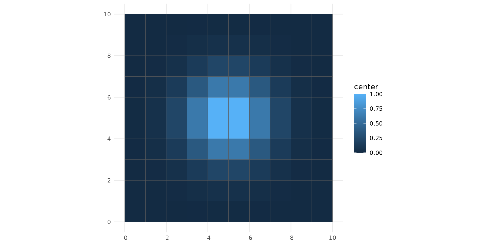
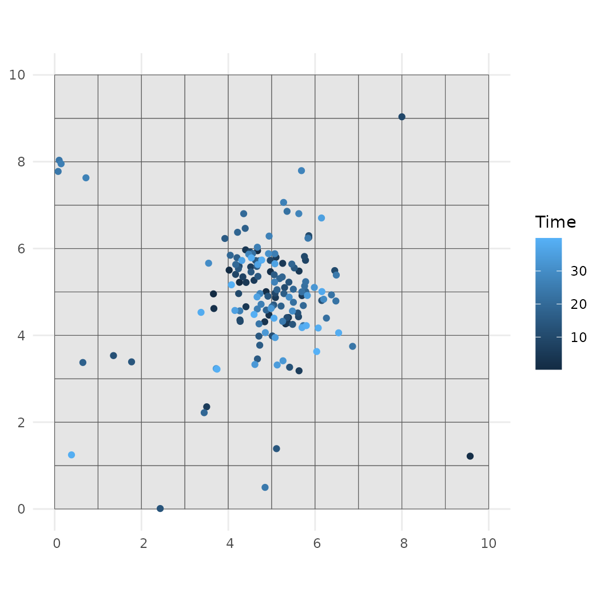
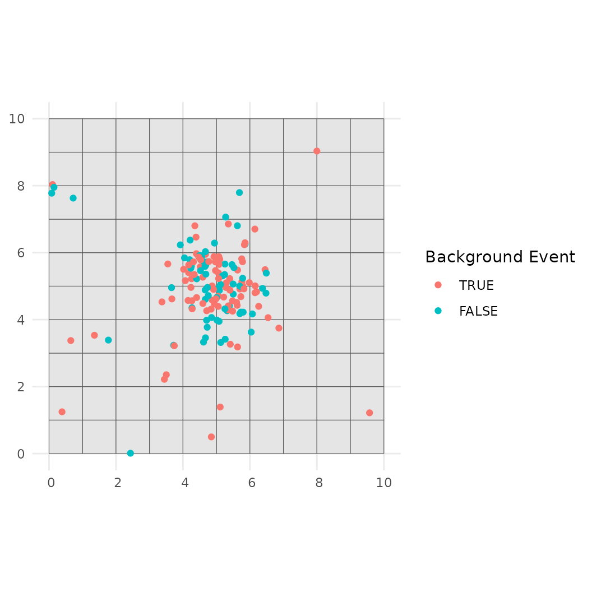
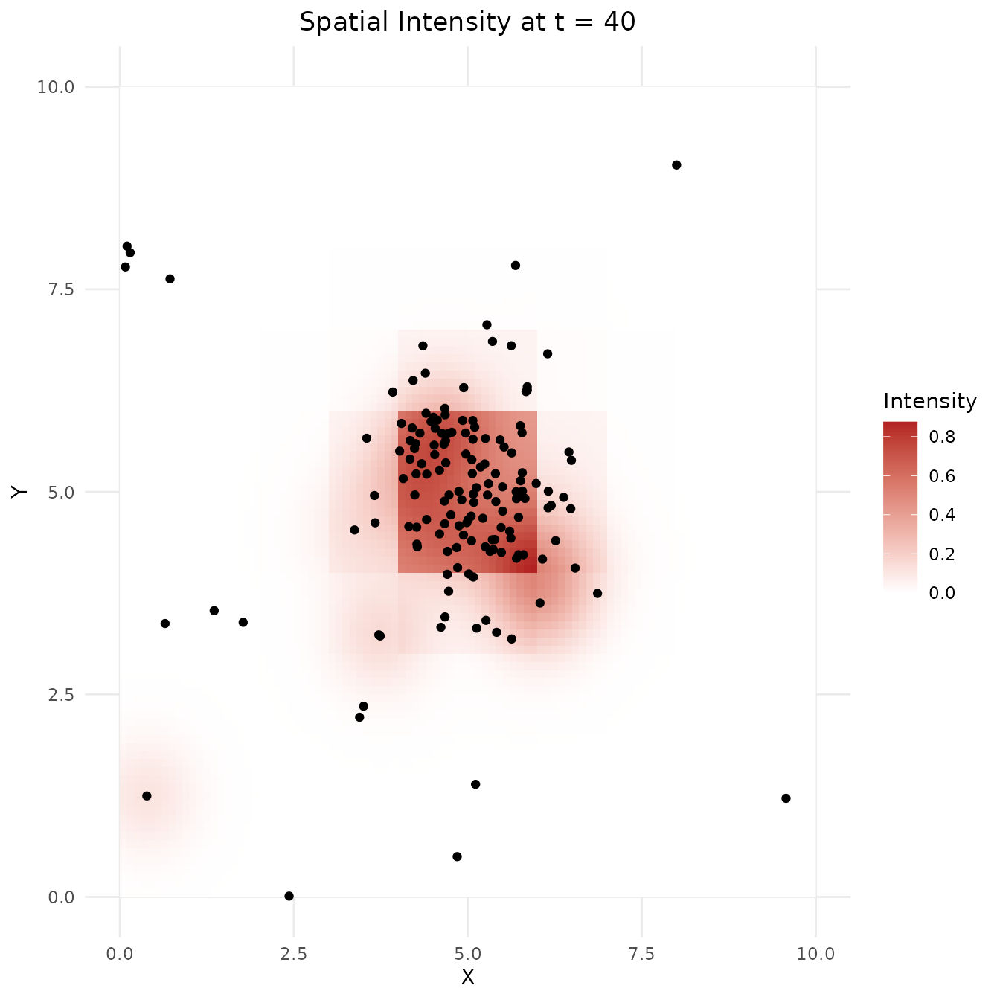
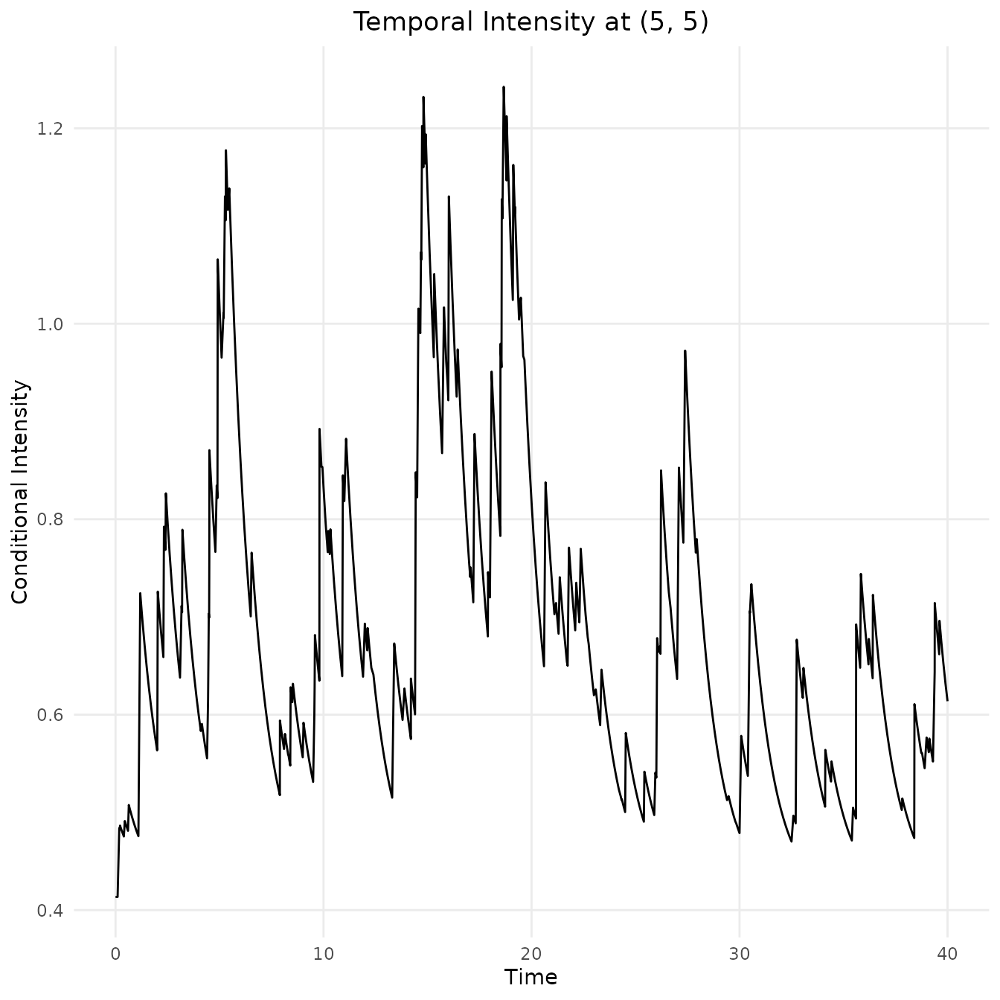

The stHawkesTools package provides utilities for
simulating, fitting, and summarising spatio-temporal Hawkes processes.
This vignette walks through a complete analysis workflow:
- define the spatial domain and model parameters;
- simulate a Hawkes process;
- estimate the model with maximum likelihood;
- quantify uncertainty via the cluster bootstrap; and
- visualise the resulting point pattern.
Throughout we focus on the default isotropic Gaussian spatial kernel and the exponential temporal kernel supplied with the package.
Installation
The development version of stHawkesTools is hosted on
GitHub. Install it with remotes::install_github() (or the
equivalent devtools::install_github()) before working
through this vignette.
# install.packages("remotes")
# remotes::install_github("cfox20/stHawkesTools")Setup
library("stHawkesTools")
library("dplyr")
#>
#> Attaching package: 'dplyr'
#> The following objects are masked from 'package:stats':
#>
#> filter, lag
#> The following objects are masked from 'package:base':
#>
#> intersect, setdiff, setequal, union
library("tibble")
library("tidyr")
library("ggplot2")
theme_set(theme_minimal())
theme_update(panel.grid.minor = element_blank(),
plot.title = element_text(hjust = 0.5))
set.seed(123)Defining a spatial region
The simulation and estimation routines operate on sf
polygons that describe where events may occur. The helper
create_rectangular_sf() builds a simple rectangular window
by supplying the minimum and maximum x and y
coordinates.
x_centers <- seq(0.5, 9.5, length.out = 10)
y_centers <- seq(0.5, 9.5, length.out = 10)
center_covariate <- exp(-(((rep(x_centers, times = 10) - 5)^2 +
(rep(y_centers, each = 10) - 5)^2) / 4))
center_covariate <- (center_covariate - min(center_covariate)) /
(max(center_covariate) - min(center_covariate))
spatial_region <- create_rectangular_sf(
xmin = 0, xmax = 10,
ymin = 0, ymax = 10,
covariates = data.frame(center = center_covariate),
n_grid = c(10, 10)
)
spatial_region
#> Simple feature collection with 100 features and 3 fields
#> Geometry type: POLYGON
#> Dimension: XY
#> Bounding box: xmin: 0 ymin: 0 xmax: 10 ymax: 10
#> CRS: NA
#> First 10 features:
#> geoid area center geometry
#> 1 1 1 0.0000000000 POLYGON ((0 0, 1 0, 1 1, 0 ...
#> 2 2 1 0.0002900759 POLYGON ((1 0, 2 0, 2 1, 1 ...
#> 3 3 1 0.0014581055 POLYGON ((2 0, 3 0, 3 1, 2 ...
#> 4 4 1 0.0040415550 POLYGON ((3 0, 4 0, 4 1, 3 ...
#> 5 5 1 0.0066928509 POLYGON ((4 0, 5 0, 5 1, 4 ...
#> 6 6 1 0.0066928509 POLYGON ((5 0, 6 0, 6 1, 5 ...
#> 7 7 1 0.0040415550 POLYGON ((6 0, 7 0, 7 1, 6 ...
#> 8 8 1 0.0014581055 POLYGON ((7 0, 8 0, 8 1, 7 ...
#> 9 9 1 0.0002900759 POLYGON ((8 0, 9 0, 9 1, 8 ...
#> 10 10 1 0.0000000000 POLYGON ((9 0, 10 0, 10 1, ...The object prints as an sf data frame. The
center column contains a covariate that peaks in the middle
of the region. We can visualise both the observation window and this
covariate surface using base sf plotting tools.

Specifying model parameters
A Hawkes model combines a log-linear background rate (for exogenous
events) with self-excitation governed by the triggering kernel.
Parameters are supplied as a named list with entries for the background
rate, triggering rate, and the parameters of the spatial and temporal
kernels. The background rate list can include regression coefficients if
spatial covariates are present; here we use an intercept and the
coefficient for the center covariate constructed above.
true_params <- list(
background_rate = list(intercept = -6, center = 5),
triggering_rate = 0.5,
spatial = list(mean = 0, sd = 0.45),
temporal = list(rate = 1.5)
)
true_params
#> $background_rate
#> $background_rate$intercept
#> [1] -6
#>
#> $background_rate$center
#> [1] 5
#>
#>
#> $triggering_rate
#> [1] 0.5
#>
#> $spatial
#> $spatial$mean
#> [1] 0
#>
#> $spatial$sd
#> [1] 0.45
#>
#>
#> $temporal
#> $temporal$rate
#> [1] 1.5The intercept corresponds to a baseline log-intensity of roughly
events per unit area per unit time. Adding three times the
center covariate increases this intensity towards the
middle of the region, while the triggering rate controls how many
offspring each event tends to generate.
Simulating a spatio-temporal Hawkes process
With the region and parameter list defined we can simulate a point
pattern using rHawkes(). Here we generate events over the
time window
.
hawkes <- rHawkes(
params = true_params,
time_window = c(0, 40),
spatial_region = spatial_region,
covariate_columns = "center",
spatial_burnin = 1
)
hawkes
#> <hawkes object>
#>
#> Number of events: 153
#>
#> Spatial Region:
#> Simple feature collection with 100 features and 3 fields
#> Geometry type: POLYGON
#> Dimension: XY
#> Bounding box: xmin: 0 ymin: 0 xmax: 10 ymax: 10
#> CRS: NA
#> First 10 features:
#> geoid area center geometry
#> 1 1 1 0.0000000000 POLYGON ((0 0, 1 0, 1 1, 0 ...
#> 2 2 1 0.0002900759 POLYGON ((1 0, 2 0, 2 1, 1 ...
#> 3 3 1 0.0014581055 POLYGON ((2 0, 3 0, 3 1, 2 ...
#> 4 4 1 0.0040415550 POLYGON ((3 0, 4 0, 4 1, 3 ...
#> 5 5 1 0.0066928509 POLYGON ((4 0, 5 0, 5 1, 4 ...
#> 6 6 1 0.0066928509 POLYGON ((5 0, 6 0, 6 1, 5 ...
#> 7 7 1 0.0040415550 POLYGON ((6 0, 7 0, 7 1, 6 ...
#> 8 8 1 0.0014581055 POLYGON ((7 0, 8 0, 8 1, 7 ...
#> 9 9 1 0.0002900759 POLYGON ((8 0, 9 0, 9 1, 8 ...
#> 10 10 1 0.0000000000 POLYGON ((9 0, 10 0, 10 1, ...
#>
#> Time Window:
#> [1] 0 40
#>
#> Event data (first 10 rows):
#> x y t id parent gen family center area
#> 1 4.257217 5.221788 0.1783462 51 0 0 51 1.0000000000 1
#> 2 3.658404 4.955294 0.2159917 66 51 1 51 0.6065127954 1
#> 3 4.020024 5.502813 0.4465737 60 0 0 60 1.0000000000 1
#> 4 4.674187 5.950167 0.6383808 57 0 0 57 1.0000000000 1
#> 5 4.871043 5.006301 1.1882090 61 0 0 61 1.0000000000 1
#> 6 9.571935 1.216893 1.2538103 4 0 0 4 0.0002900759 1
#> 7 3.668285 4.618018 2.0077687 13 0 0 13 0.6065127954 1
#> 8 4.971876 5.466472 2.0309687 64 0 0 64 1.0000000000 1
#> 9 4.937314 4.466533 2.3279499 23 0 0 23 1.0000000000 1
#> 10 5.319653 4.265582 2.4204601 67 23 1 23 1.0000000000 1
#> geometry
#> 1 POINT (4.257217 5.221788)
#> 2 POINT (3.658404 4.955294)
#> 3 POINT (4.020024 5.502813)
#> 4 POINT (4.674187 5.950167)
#> 5 POINT (4.871043 5.006301)
#> 6 POINT (9.571935 1.216893)
#> 7 POINT (3.668285 4.618018)
#> 8 POINT (4.971876 5.466472)
#> 9 POINT (4.937314 4.466533)
#> 10 POINT (5.319653 4.265582)
#> # 143 more rows
#> # Use `print(n = ...)` to see more rowsThe returned object is an sf tibble containing the event
coordinates (x, y), occurrence times
(t), the center covariate at each location,
and a geometry column.
head(sf::st_drop_geometry(hawkes))
#> <hawkes object>
#>
#> Number of events: 6
#>
#> Spatial Region:
#> Simple feature collection with 100 features and 3 fields
#> Geometry type: POLYGON
#> Dimension: XY
#> Bounding box: xmin: 0 ymin: 0 xmax: 10 ymax: 10
#> CRS: NA
#> First 10 features:
#> geoid area center geometry
#> 1 1 1 0.0000000000 POLYGON ((0 0, 1 0, 1 1, 0 ...
#> 2 2 1 0.0002900759 POLYGON ((1 0, 2 0, 2 1, 1 ...
#> 3 3 1 0.0014581055 POLYGON ((2 0, 3 0, 3 1, 2 ...
#> 4 4 1 0.0040415550 POLYGON ((3 0, 4 0, 4 1, 3 ...
#> 5 5 1 0.0066928509 POLYGON ((4 0, 5 0, 5 1, 4 ...
#> 6 6 1 0.0066928509 POLYGON ((5 0, 6 0, 6 1, 5 ...
#> 7 7 1 0.0040415550 POLYGON ((6 0, 7 0, 7 1, 6 ...
#> 8 8 1 0.0014581055 POLYGON ((7 0, 8 0, 8 1, 7 ...
#> 9 9 1 0.0002900759 POLYGON ((8 0, 9 0, 9 1, 8 ...
#> 10 10 1 0.0000000000 POLYGON ((9 0, 10 0, 10 1, ...
#>
#> Time Window:
#> [1] 0 40
#>
#> Event data (first 6 rows):
#> x y t id parent gen family center area
#> 1 4.257217 5.221788 0.1783462 51 0 0 51 1.0000000000 1
#> 2 3.658404 4.955294 0.2159917 66 51 1 51 0.6065127954 1
#> 3 4.020024 5.502813 0.4465737 60 0 0 60 1.0000000000 1
#> 4 4.674187 5.950167 0.6383808 57 0 0 57 1.0000000000 1
#> 5 4.871043 5.006301 1.1882090 61 0 0 61 1.0000000000 1
#> 6 9.571935 1.216893 1.2538103 4 0 0 4 0.0002900759 1Visualising simulated events
The convenience function plot_hawkes() produces
ggplot2 graphics coloured by either event time or whether
the event is a background (immigrant) or triggered (descendant) event.
For simulated data the latter uses the known parentage structure from
the generating process.
plot_hawkes(hawkes, color = "time")
plot_hawkes(hawkes, color = "background")
Maximum likelihood estimation
Parameter estimation uses the expectation–maximisation (EM) algorithm
implemented in hawkes_mle(). The function requires initial
values in the same format as rHawkes(). Providing
reasonable starting values helps the algorithm converge quickly; here we
perturb the true parameters slightly.
initial_values <- list(
background_rate = list(intercept = -6, center = 2.5),
triggering_rate = 0.5,
spatial = list(mean = 0, sd = 0.5),
temporal = list(rate = 1.8)
)
est <- hawkes_mle(
hawkes,
inits = initial_values,
boundary = 0.5,
max_iters = 200
)
est
#> Triggering Parameter Estimates:
#> Background Rate (β):
#> intercept: -6.696
#> center: 5.813
#> Triggering Rate (θ): 0.419
#>
#> Spatial Triggering Parameter Estimates:
#> mean: 0
#> sd: 0.477
#> Temporal Triggering Parameter Estimates:
#> rate: 0.897The returned hawkes_fit object stores the parameter
estimates, fitted residuals and the original hawkes data.
The standard summary() method reports the point estimates
alongside Wald standard errors and confidence intervals derived from the
observed information matrix.
summary(est)
#> Asymptotic confidence inervals are known to undercover. Consider bootstrap methods.
#> Number of events: 153
#>
#> Residuals:
#> Min 1Q Median 3Q Max
#> 0.001687 0.292040 0.647415 1.314780 5.819229
#>
#> Coefficients:
#> Estimate Std. Error 2.5% 97.5%
#> Background Rate: Center 5.81273 0.46159 4.90804 6.717
#> Background Rate: Intercept -6.69587 0.43128 -7.54117 -5.851
#> Triggering Rate 0.41918 0.08974 0.24330 0.595
#> Spatial: Mean 0.00000 0.07096 -0.13908 0.139
#> Spatial: Sd 0.47727 0.06184 0.35606 0.598
#> Temporal: Rate 0.89743 0.32869 0.25322 1.542
#>
#> Confidence level used: 95.0%Visualising the fitted intensity surface
The fitted model lets us interrogate the conditional intensity across space and time. Evaluating the spatial intensity at the end of the observation window highlights how the covariate concentrates activity in the middle of the region, while the temporal profile at the centre of the window shows how excitation builds as events occur.
intensity_views <- plot_intensity(
hawkes,
est,
stepsize = 0.1,
time = 40,
coordinates = c(5, 5)
)
intensity_views$spatial
intensity_views$temporal
Uncertainty assessment with the cluster bootstrap
Spatial-temporal clustering can produce highly skewed sampling
distributions for MLEs. The cluster bootstrap repeatedly resamples whole
estimated clusters and re-estimates the model, capturing this dependence
structure. The cluster_bootstrap() function requires the
fitted hawkes object, the corresponding
hawkes_fit, and the number of bootstrap replications
B.
boot_results <- cluster_bootstrap(
hawkes = hawkes,
est = est,
B = 3,
alpha = 0.05,
boundary = 0.5,
max_iters = 200
)
boot_results
#> # A tibble: 6 × 8
#> parameter_type parameter boot_est_median lower upper width sd
#> <chr> <chr> <dbl> <dbl> <dbl> <dbl> <dbl>
#> 1 background_rate center 5.18 5.05 6.04 0.991 0.565
#> 2 background_rate intercept -6.05 -6.85 -5.95 0.895 0.518
#> 3 spatial mean 0 0 0 0 0
#> 4 spatial sd 0.500 0.405 0.565 0.160 0.0845
#> 5 temporal rate 0.843 0.501 1.11 0.608 0.321
#> 6 triggering_rate triggering_rate 0.395 0.338 0.536 0.198 0.107
#> # ℹ 1 more variable: percent_failed <dbl>Each row contains the bootstrap median, percentile-based interval,
estimated standard deviation, and the proportion of bootstrap fits that
failed to converge (if any). Larger B yields smoother
estimates at the cost of additional computation; parallel processing is
available by setting parallel = TRUE after configuring a
future plan.
Next steps
This introductory example highlights the core workflow supported by
stHawkesTools. Further functionality includes subsampling
utilities, residual analysis, and tools for working with covariate
surfaces. Consult the package reference documentation for details on
these advanced capabilities.